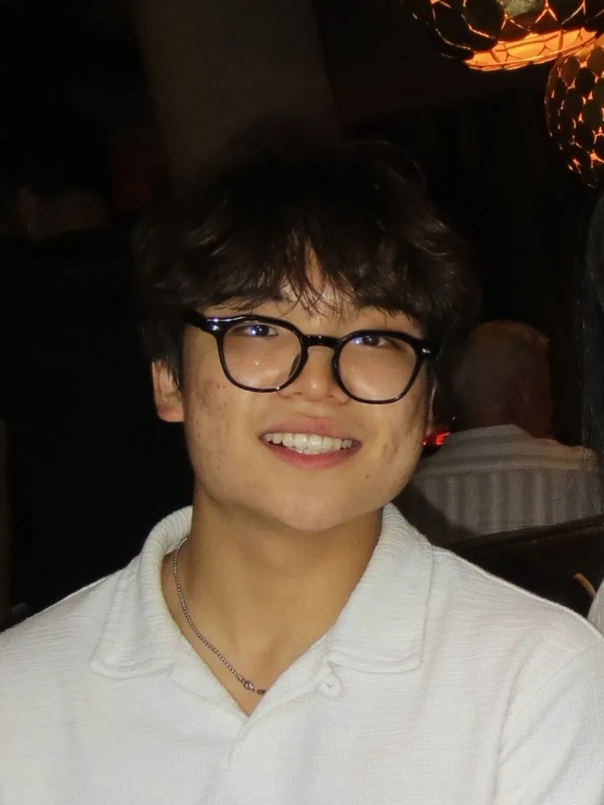
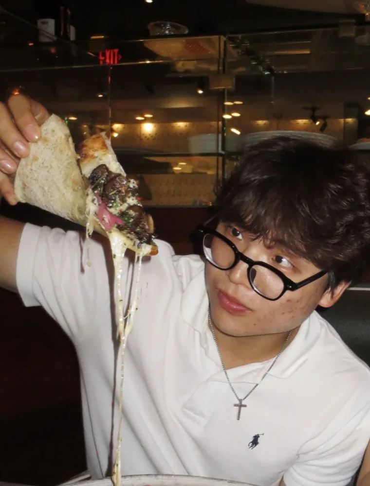

I’m a senior at Harvard studying computer science with a secondary in Visual Studies. My favorite projects have been a dating app that fosters real connection, an organization reporting chart run on AWS for the sales team, and GTM automation that enriched leads across 13,000 contacts for the BDR team.
Before that, I ran procurement and special projects at The Harvard Shop, working with real inventory ($1.3M), finding creative ways to maintain a 60% profit margin, meeting real vendors, and working closely with the e-commerce, stores, and stock team. In my free time, I love painting, listening to music, playing old Pokémon games on the Game Boy and watching 2018 prime James Harden highlights.